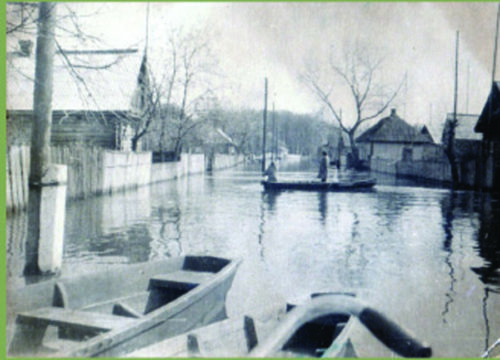
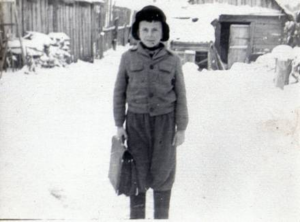
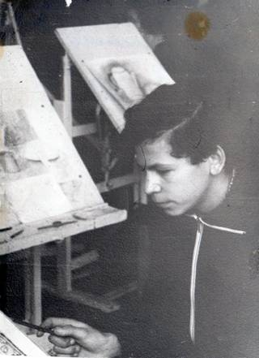
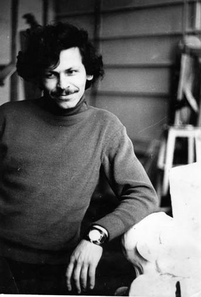
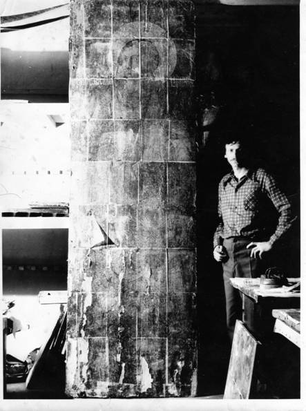
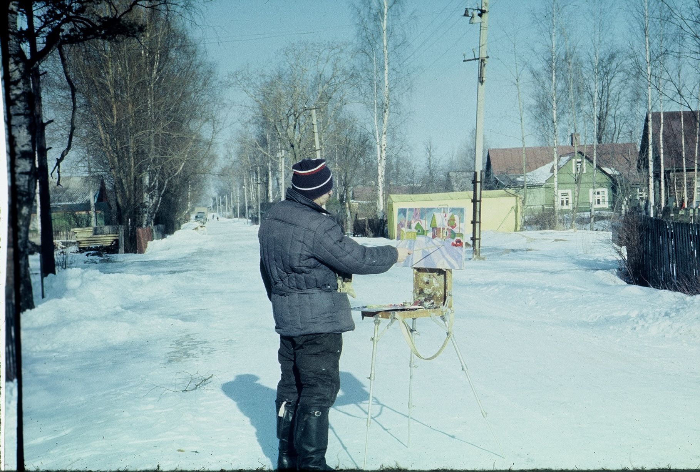
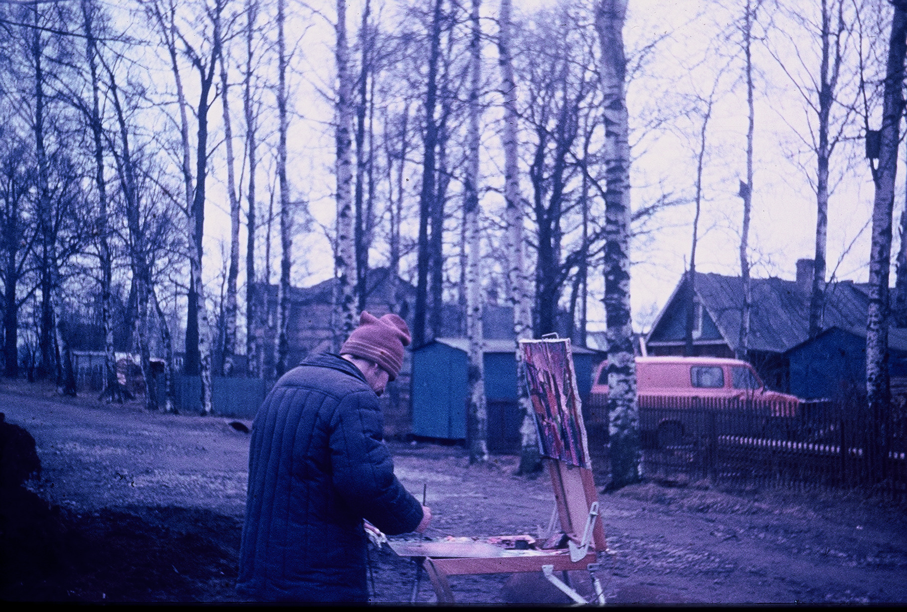

The first works of Michail Tschernjavski, which interested the viewer with their spontaneity, bright colors, and original composition, appeared at exhibitions in Moscow and St. Petersburg in the late 80s. A time of change both in the life of the country and in art. Michail Tschernjavski was born on June 29, 1953 in the small village of Komarin. On the one hand, surrounded by dense pine forests full of animals, mushrooms and berries, on the other, surrounded by the majestic Dnieper River, with numerous tributaries, streams and lakes, the village itself was created by nature for the birth of artists and musicians. In the spring, the river overflowed into the endless sea, and only a small part of the village remained untouched by water.
Spring. Komarin. Flood Spring. Komarin. Flood At night people were on duty at the dams, fearing great trouble. But after a while the water went away, and everything around instantly turned into a huge spring bouquet. Summer covered the water meadows with a carpet of various flowers, brightly colored butterflies and dragonflies. Autumn was coming imperceptibly with the azure surface of the lakes, with cobwebs slowly flying in the transparent sky. Autumn gave way to winter. On long winter evenings, Mikhail watched his older brother paint with watercolors.
Winter Winter It was a miracle more amazing than a movie, than fairy tales and stories that my father read aloud in the evenings. The artist recalls how, at the age of 9, he sent his watercolors to a children’s drawing competition in Minsk and received as a reward a magnificent set of watercolor paints with good brushes. Drawing has become much more interesting. After all, good paints were an expensive pleasure and a rarity. The watercolors were supplemented with gouache paints, a gift from my father. The walls of the room were covered with copies of reproductions of famous artists and their own works. After finishing 8th grade at the age of 15, Michail went to St. Petersburg to study painting. Here he entered an art school that trained teachers for high school.
Biography At school The school taught painting, composition, graphics, taught how to make sketches of theatrical costumes, dolls and much more. The training lasted 4 years. Classes started at 9 am and ended at 21.00. You could have left earlier, but how could you not stay for the evening drawing, where they painted portraits or nudes, where you could learn from senior students. Then half an hour by train from Finlyandsky Station to the village of Levashovo, a cold small room with a smoking stove. While the stove was cooling down, it was necessary to eat, prepare homework and read at least for a few hours. It was  freezing in the room this morning. Quickly wash yourself with snow, run to the train and, finally, warm up in the carriage. The artist recalls that, despite the difficulties, it was the most interesting time. A city with museums and theaters, a good library at the school. Mikhail discovered St. Petersburg, the city opened up the whole world to him. Before this, real art for Chernyavsky was only realism. The large Van Gogh exhibition at the Hermitage in the late 60s amazed me, made me think and listen to what my heart tells me. Then there were the German Expressionists. The artist still remembers these two exhibitions with excitement today. Only many years later, at the end of the 80s, will the joy from what he saw in the Hermitage 20 years ago burst out through the play of colors in the paintings of Mikhail Chernyavsky. In 1972, Mikhail graduated from college. Childhood friends who studied in St. Petersburg helped bring many drawings and sketches to my parents in Belarus. The autumn of 1972 was unusually tender and beautiful. Windless, warm days helped me write and draw until November, when the time came to go into the army. On an early, rainy and cold November morning, the bus was taking us away from Komarin. The broken road disappeared in the darkness and with it youth disappeared forever. For two years of service in the Army, I was able to draw and write only occasionally. Completely wasted time. After the army, I spent many months of hard study in order to enter the Academy of Arts in St. Petersburg in 1976, studying at the Faculty of Painting.
Biography At the Institute. Repina. Restoration of icons The first months of studying at the Academy were very interesting. Portraits and nudes, anatomy class, lectures on art history. But with each course  it became more and more boring. The performances were repetitive and monotonous. Composition, the main subject for artists, was given almost no time. However, in 1983, Mikhail Chernyavsky successfully graduated from the Academy with an excellent grade for his diploma film.
Biography At the Institute. Repina In September of the same year, Volgograd bought a small work by Chernyavsky, “Portrait of a Girl,” from a large exhibition in Manege in St. Petersburg. It seemed that one could continue to paint similar works, but the artist was looking for his place in art. He wrote  hundreds of sketches at this time, many of them were mercilessly destroyed. Neighbors in the village of Murino, where the artist lived, and many friends have works that they saved from destruction. Chernyavsky still treats his work the same way. In the catalog you can see one of the works created in the late 80s early 90s “October on the Moika” More than 5 years of hard work to comprehend, check your vision in the paintings